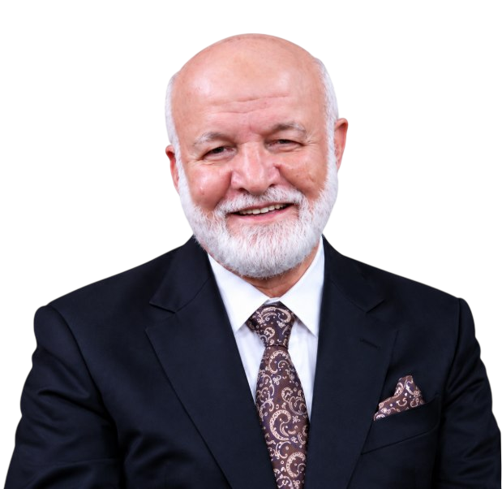

Hakkımızda
Bir rehber. Bir müjde. Bir davet.
Allah, insanın mutlu olmasını istiyor. Bu sebeple Kur’an bir mutluluk rehberidir, mutluluk davetiyesidir, mutluluk müjdesidir ve mutluluk garantisidir.
O sebeple diyoruz ki: Her An Kur’an, Her An Mutluluk. Sizi Allah’a davet ediyoruz. Sizi mutluluğa davet ediyoruz.
Dr. Abdulcabbar Boran, Kur’an-ı Kerim ayetleri ve hadisler ışığında sorularınızı cevaplıyor.
HER GÜN BİR İZ
VİDEOLAR
HER PAZAR BİR SOHBET

Dr. Abdulcabbar Boran
Fizik Yüksek Mühendisi • Mutasavvıf • Yazar
Hayatını Kur’an-ı Kerim’in sevgi, kurtuluş ve mutluluk mesajını insanlığa ulaştırmaya adamıştır. Kitapları, TV programları, ulusal ve uluslararası konferansları, 16 dilde sosyal medya yayınları ve diğer gönüllü çalışmalarıyla yıllardır geniş kitlelere mutluluğu taşımaktadır.
Eserleri ve çalışmaları hakkında daha fazla bilgi“ Sizi Allah’a davet ediyoruz. Sizi Mutluluğa davet ediyoruz. ”